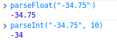
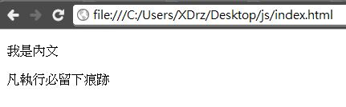
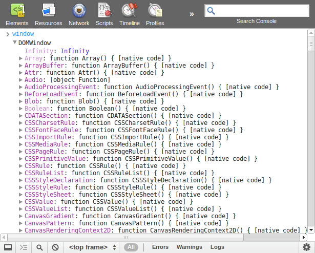
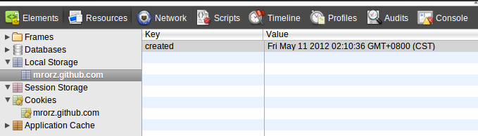
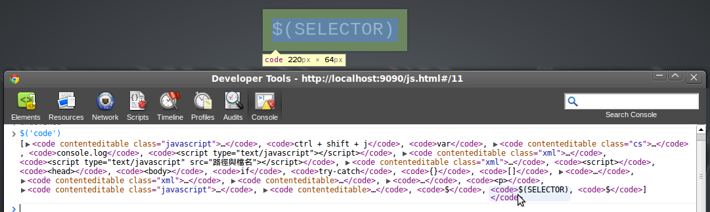
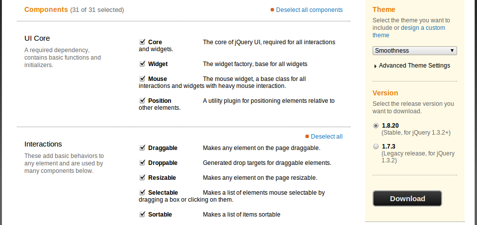
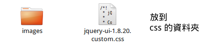
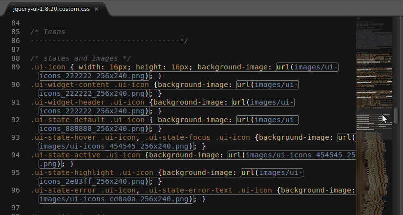

Javascript
按 Space 概覽


長這樣
- Javascript 操作 DOM (HTML 的 API) 的範例。
document是 DOM 物件，getElementById,addEventListener是 DOM 方法。- 變數需要事先定義，但不指定型別。
牛刀小試
怎麼寫
Ctrl + Shift + j 打開 Javascript Console。

輸入一行 Javascript (黑色)，輸出一行回傳值 （藍色）
試試 3+2, Math.sin(Math.PI), 0.1 + 0.2
變數與型別
- Javascript 為弱型別（weak typing）語言
- 用
var敘述定義變數 - 變數可以是任何型態的東西
var a = 3：a的型態會是number - 大小寫有差
var a = "str", A; // a != A
a = 3; // 換型態
運算子
- 負數 :
-(如-35) - 算數 :
*/%+- - 比大小 :
===!==<><=>= - 邏輯運算 :
&&||! - 三元運算子 :
? : - 指派 :
=+=-=*=/=%=
文字與數字
- 數字
+數字 是加法。 - 數字
+字串、字串+數字、字串+字串：字串串接

parseInt(str, base), parseFloat(str, base) : 文字轉數字

輸出文字
console.log(東西)→ 寫進 Console。
若東西是陣列或物件，可以看到內容。document.write(東西)→ 把東西轉成字串，寫進 HTML。
通常不會使用 document.write。
這個教學網頁用 document.write 印出資料當作示例，但開發時一般用更方便的 console.log。
JavaSCRIPT
寫在一個檔案裡面，才有「腳本」的 FU
用 <script type="text/javascript"></script> 包住，放在 HTML 裡
Javascript file
- 另外寫成一個 *.js 檔
<script type="text/javascript" src="路徑與檔名"></script>
<script> 寫在 <head> 或 <body> 裡都可以。
瀏覽器一讀到就會立即執行（Load-and-go）。
Javascript file (續)
JS 檔和 HTML 檔同目錄

執行結果：

Javascript file (續)
JS 檔和 HTML 檔不同目錄

JS 和 C 很像
程式流程控制方面
if 條件
if-else if-else-endif
迴圈
for, while, break, continue
迴圈前可以加上 label 如下：
outerLoop: for(;;){
……
if(...){
break outerLoop;
}
if(...){
continue outerLoop;
}
……
}
switch case
記得 break;
註解
/* 多行 */ 與 // 單行
JS 又和 C 不一樣
型態與其他
保留字
不能當作變數名稱、屬性名稱的字。
abstract boolean break byte case catch char class const continue
debugger default delete do double else enum export extends
false final finally float for function
goto if implements import in instanceof int
interface long native new null package private protected public return
short static super switch synchronized
this throw throws transient true try typeof
var volatile void while with
特殊值
NaN: Not a number，不是數字。
undefined: 未定義。變數的預設值、function 預設的回傳值。
null: 什麼都不是。
String 字串
- 單引號(")、雙引號(')效果相同
\',\",\\,\nlength屬性：長度- 無法修改字串 (immutable)。
- UCS-2 編碼 （UTF-16 的前身）
- 屬性與方法
Function 函數
建一個函數：
function 函式名 (引數們) { ... }
var 函數名 = function (引數們) { ... }
呼叫一個函數：
函數名(要傳的引數)
- 函數可以像變數一樣被丟來丟去。
- 無法像 C 那樣指定引數預設值。
- 呼叫時引數的個數，和函數定義的引數個數可以不一樣。
Function 函數
把 function 當成引數傳給另一個 function，
在綁定 event handler （或稱 callback function ) 時很常用
Object 物件
{key: value1, key2: value2, ……}
- value 可以是函數
- 函數裡
this指自己這個物件 - 可以隨時幫 object 增加成員
Object 物件
用 key 存取物件內的 value：object.key 或 object["key"]
key 為保留字時請用 object["key"]
Array 陣列
[元素1, ……, 元素N]
- 元素不一定要都同一種型態
- length 為陣列長度
- 陣列是一種物件（陣列繼承自物件）。
Array method
join(sep)把每個元素轉成字串，用分隔字元sep接起來。push(item...)將item附加到末端，回傳新長度。pop()移除並回傳最後一個元素。- 詳見 W3Schools
Just for reference
Javascript 物件變數（含陣列）只存 reference。
於是 物件 === 物件 結果很微妙。
Javascript 沒有原生的 Object equals 方法。
比較兩個 Javascript Object 是否每個 key、value 相同，其實很麻煩。
Pass-by-reference
Javascript 物件變數當引數時，為 pass-by-reference。
其他型態，如 Number，則是 pass-by-value。
DOM Window
window object
Javascript 裡有個變數是一切的根源。
window 就是根源。

時間到
setTimeout(callback, t) 會在 t ms 後執行 callback。
回傳一個 handle。
clearTimeout(handle) 取消此倒數。
網址相關
location.href, location.hash
傳值進去會重新整理瀏覽器頁面。
彈出式視窗
alert, confirm, prompt
資料儲存
localStorage, sessionStorage
- 用法像 javascript object
localStorage.KEY = VALUE，VALUE只能是字串localStorage會一直存在，sessionStorage僅存在瀏覽器分頁中

用字串表示物件
localStorage 的值只能存字串，無法儲存 javascript 物件
把物件用一個字串來表示。
JSON
Javascript String Object Notation
- 類似 javascript 物件的初始化方法（array literal）
- 不會把 function (method) 變成字串
物件 = JSON.parse(字串)、字串 = JSON.stringify(物件)
document.cookie
- 另一種資料存儲
- 同樣是 key-value pair, value 限字串
- 4kB 大小限制（
localStorage有 5MB） - server 可以設定給 browser 存什麼 cookie
- browser 和 server 要檔案時，會附上 cookie
jQuery
替你操控 DOM (HTML 的 API)
開始用 jQuery
神秘咒語
<script type="text/javascript"
src="https://ajax.googleapis.com/ajax/libs/jquery/1/jquery.min.js">
</script>
然後施魔法
全能 DOM 改造王
物件 5927：不方便的 API
DOM 這個 API 很長，相當困擾。
一級 DOM 改造士: jQuery
SPEC
- 表單送出時，檢查是否接受出師表
- 按「增加推薦人」時，蓋一個下面的東西：
<p>
<input type="text" name="referral">
<a class="del">刪除</a>
</p>
- 按裡頭的「刪除」時，把整個
<p>移除。
希望
寫少一點，作到的事情更多。
BEFORE
AFTER
なんということでしょう!
jQuery Object
神奇的 $
$(SELECTOR) or $(HTML)
$是一個 function。- 傳入 css selector → 回傳找到的 element
- 傳入 HTML tag → 回傳新蓋的 element
element 被包在 jQuery obejct 裡頭。

jQuery Object
- 看起來像陣列
- 有 length 屬性
- 有很多 method 可以用
$()
從「拿到 jQuery Object」開始
$(SELECTOR) or $(HTML)
通常會回傳 jQuery Object，本身，故支持 chaining。
jQuery API
Manipulation
操弄 DOM 結構與屬性
- 讀取 / 新增 class 或 CSS style
- 讀取 / 新增 / 移除屬性
- 在 裡面 / 旁邊 插入/移除 DOM element
- 包覆目前 DOM element
Manipulation
Traversing
從目前 element 找到另一個 element
Traversing
jQuery Event
Events
互動的主要要素。
$物件.on('事件', handler)
$物件.on('事件', selector, handler)
Event handler
事件被觸發時，會被執行的 function，用來處理此事件。又稱作 callback。
「callback」：先給定一個 function，但不立即執行。
- 第一個引數是 Event object
event.target：被觸發了該事件的 HTML Element。
以下用 event 指稱 handler 裡的 event object。
Event Propagation
子元素的事件觸發時，父元素的該事件也會跟著被觸發 (bubbling)。
event.stopPropagation() 終止事件散播。
抑制原本的動作
和 event.stopPropagation() 不同。
handler 的回傳值
return false = event.stopPropagation() + event.preventDefault() + return
.on()
$物件.on('事件', handler)
$物件.on('事件', selector, handler)
後者把 event handler 綁在 $物件 上，觸發時檢查 event.target 是否符合 selector，符合才執行 handler。
捷徑
.on('click', handler) → .click(handler)
.on('submit', handler) → .submit(handler)
不加 handler 則可觸發相對應事件（執行該事件的 callback）；
.submit() 還可以送出表單。
常用的 events
表單相關
focus,blur：得到 focus / 失去 focus 時focusin,focusout：自己或裡面的元素得到 / 失去 focus 時change：表單元素的值（value）改變時submit: 表單送出前
滑鼠相關
click：被點擊（按下滑鼠＋在元素內放開滑鼠）時mousedown,mouseup,mousemove: 按下 / 放開 / 移動滑鼠時mouseenter，mouseleave：滑鼠進入 / 離開某元素
常用的 events (續）
鍵盤相關
keydown,keyup：按下 / 放開鍵盤按鍵時
載入相關
ready：DOM 載入完成時error：圖片載入錯誤時
Exercise
SPEC
- 按「新增項目」按鈕可以在
<ul>的開頭新增一個<li> <li>裡頭有<input>且進入打字狀態。- 打完字後按 enter 鍵，可以結束編輯。
- 結束編輯時，將目前的所有項目存進
localStorage。順序要保留。 - 頁面剛被打開時，從
localStorage裡撈之前存的資料。
jQuery Ajax
XMLHttpRequest
- DOM 提供之 API 之一
- 用 javascript 送 GET/POST 等到 server
- 不用重新整理頁面
- 處理 server 回傳之資料
- 可處理 JSON / XML / HTML / 純文字
ajax
Asynchronous JavaScript and XML
- 用 XMLHttpRequest 和 server 溝通
- 用 (當時最尖端的) XML 格式交換資料
- 用 Javascript 操作 DOM，執行動態效果
- 不等遠端回應，繼續執行（asynchronous）
- 用 callback 處理遠端回傳的資料
jQuery Ajax
jQuery 包裝了 Ajax 相關功能
$.get送 get request 給 server$.post送 post request 給 server$.ajax為$.get、$.post等 ajax 相關的核心 function
$.get 範例
$.get(URL, DATA, CALLBACK, TYPE)
DATA: 要送到遠端的資料，object 或字串。TYPE: 如何解讀遠端的回應，可以是'json','text','html'等。
$.getJSON
$.getJSON(URL, DATA, CALLBACK)
$.get(URL, DATA, CALLBACK, 'json') 的簡寫。
Google Geocoding API
（′,_ゝ`)
淡定。
Origin http://localhost:3000 is not allowed by Access-Control-Allow-Origin.
瀏覽器不會信任來自別的 Domain 的 ajax response。
除非 response 裡有 Access-Control-Allow-Origin 這個 header。
javascript 向當前頁面的 domain 送 ajax，則沒有這個問題。
jQuery UI
jQuery UI
Why 介紹 it?
- jQuery UI 元件有統一的 API
- jQuery UI 是複雜程度適中的一種 jQuery plugin
安裝 jQuery UI
- 選擇 Theme，下載 jQuery UI
- 選擇要用的 plugin
- 引入需要的 css 和 javascripts
安裝 jQuery UI (I)
選擇 Theme，下載 jQuery UI


安裝 jQuery UI (II)
載下來的檔案：

css/THEME名/內有 jQuery UI 用的圖檔與 css 檔。js/底下有 jQuery 與 jQuery UI 的 js 檔。- development bundle 有文件和各個元件的原始碼。
- index.html 是此元件的 demo。
安裝 jQuery UI (III)

開 css/THEME名，把 css 檔和 image 目錄複製到你放 css 的地方。

把 jQuery UI 的 js 檔複製到放 js 的地方。
- 打開要安裝 jQuery UI 的網頁，用
link標籤連結 css 檔。 - 同上，用
script標籤連結 jQuery UI 的 js 檔。
UI css 與 image

若分開放置把 image 目錄和 css 檔，請把 css 檔中所有 url(...) 的路徑，換成此 css 檔到圖檔的相對路徑。
jQuery UI API 形式
jQuery UI 各種元件的的操作方式都很類似。
以 jquery UI dialog 為例
$(元素).dialog({autoOpen: false, resizable: false})：初始化dialog。$(元素).dialog('open')：呼叫 dialog 的 method。$(元素).on('dialogopen', handler)：指定 event handler。
詳細的初始化 option、event、method，都在文件下方。
Demo
用 jQuery UI sortable，把能新增項目的清單改成能拖曳的。
SPEC
- 要能上下拖曳清單項目
- 拖曳結束時，將目前順序存進
localStorage - 新增刪除按鈕，按下去會有 jQuery UI dialog 確認是否繼續
- 別忘了刪除後也要更新
localStorage
Debugging
console.log
- 物件可能會被更動
中斷點
- 開發人員工具的「Scripts」 面板
- 選擇要 debug 的檔案
- 中斷時可用 console
- "Pause on uncaught exception" 按鈕